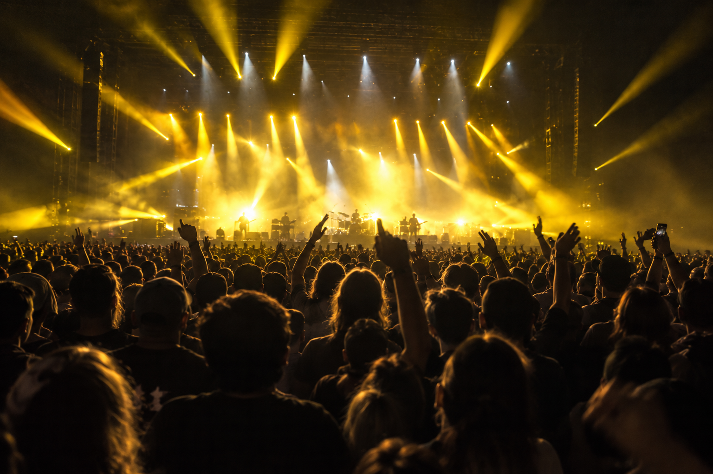
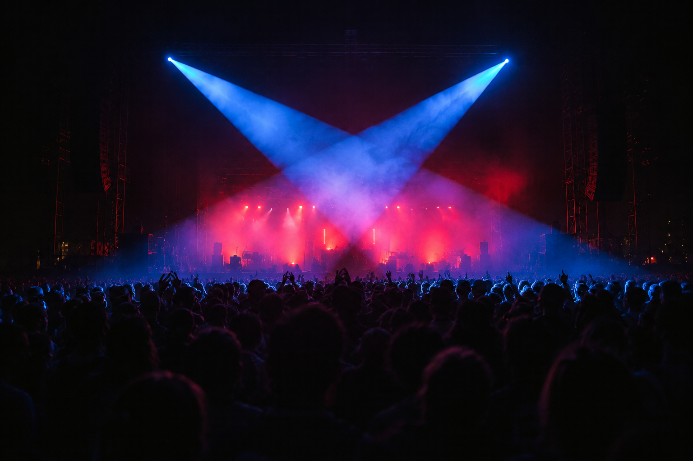

GOLDEN WASH


STROBE 是一台向现场演出的视觉混音台。
把灯光、材质和实时画面放进同一个节奏。
跟随音乐，让每一次变化都有清晰的落点。

LASER GRID · LOOP 8 BAR
无声视觉预演 · 不是音频或视频播放
— LIVE CONSOLE
两张卡座，一条交叉推子，八条独立通道。
选择照片，调节混合，找到这场演出的重心。

点选照片会装入当前 Deck A；两个卡座分别保留进度。
— SCENE LIBRARY
— ENGINE
把节拍与画面放在同一条视觉时间线上。
MIDI / Syphon / Spout / Art-Net / sACN
有秩序的通道、图层与演出画面。
独立网页视觉演练。未连接音频、GPU合成引擎或舞台设备；以上静态读数不是设备或网页性能实测。